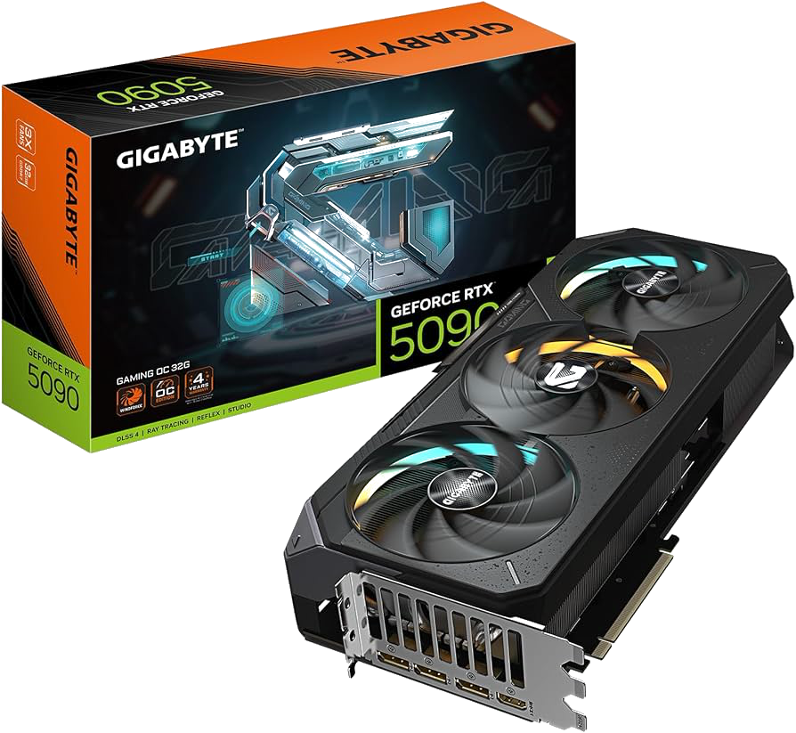
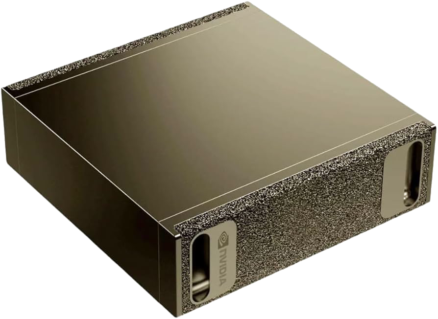
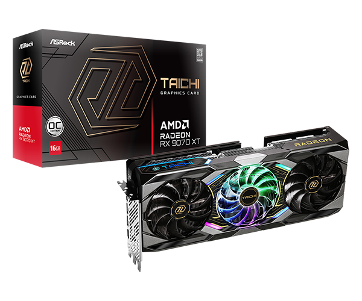
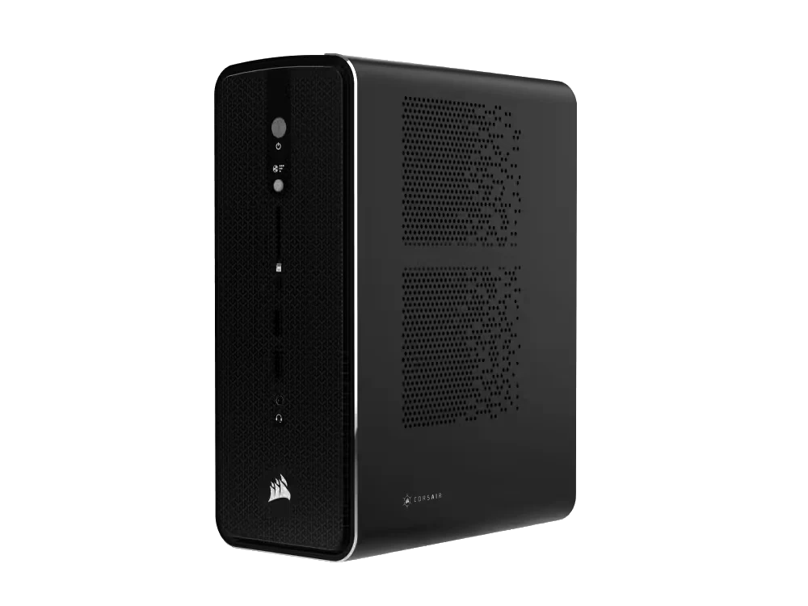

Knowledge Bytes | Local AI Models
Learning Objectives
- The case for running AI models locally
- Hardware requirements
- Discovering and running models
- How models are optimized for local hardware
- Benchmarks
Why Local AI?
Why Local AI?
- Privacy
- Every call to ChatGPT or Claude may get logged and/or be used for training purposes
- Many organizations don’t want their customer/financial data logged with an AI vendor
- There may also be legal regulations/restrictions
Why Local AI?
- Offline
- Every call you make to ChatGPT or Claude needs an Internet connection
- That’s not always guaranteed!
- e..g, a remote school in India and/or rural districts here in the US
Why Local AI?
- Latency
- Even with a network connection, calls can suffer from increased latency
- Especially if your application needs frequent, quick responses
- e.g., using a VLM on a video stream for a user with vision impairments
Why Local AI?
- Cost
- While per-API costs are fractions of a cent, these can grow out of control with exponential growth
- More pronounced for long conversation threads
- Or agents with verbose tool call requests/responses
What’s Your Hardware?
What’s Your Hardware?
- NVIDIA GPU
- AMD GPU
- Apple Silicon
- NPU (Neural Processing Unit)
- CPU
NVIDIA CUDA
- CUDA (Compute Unified Device Architecture)
- Launched in 2006 to introduce programming on GPUs (GPGPUs or General Purpose GPUs)
- A C-like programming interface
- Perfectly timed for the deep learning revolution of the 2010s
- Additional libraries (e.g., cuBLAS, cuDNN) make CUDA the de facto standard today
NVIDIA CUDA - Hardware Support
- RTX 40- and 50- series cards
- RTX 30- series still used in education
- 8GB - 32GB VRAM
- RTX 40- and 50- series laptops (although thermal throttled)

NVIDIA CUDA - Hardware Support

- DGX Spark
- Launched in 2025
- NVIDIA GB10 Blackwell GPU
- 128GB of unified memory
- 4TB NVMe SSD
- Well suited for fine-tuning open-source models
- Multiple vendors (MSI, ASUS, DELL)
Sidebar: TOPS
- TOPS (Tera Operations Per Second)
- How many trillion operations a GPU can perform per second
- Often qualified with the data type
- 64 INT8 TOPS == 64 trillion 8-bit operations per second
AMD ROCm
- ROCm (Radeon Open Compute)
- Launched in 2016 as an open-source alternative to CUDA
- Embraced open standards (e.g., OpenCL), but fragmentation initially hurt adoption
- Has evolved significantly since (e.g., rocBLAS) although ecosystem gaps compared to CUDA
AMD ROCm - Hardware Support
- RX70- and 90- series
- 8GB - 32GB VRAM
- Competitive prices compared to NVIDIA RTX
- But limited libraries compared to CUDA

AMD ROCm - Hardware Support

- Strix Halo
- Competitor to DGX Spark
- RX8060S and 128GB unified memory
- Price competitive
- Multiple vendors (HP, Corsair, Xiaomi)
Apple Silicon
- Metal
- Released in 2014, low-level graphics and compute API
- MPS (Metal Performance Shaders)
- Provides primitives for neural networks
- PyTorch added device support for MPS in 2022
- MLX
- Providing NumPy-like API for Apple Silicon hardware
Apple Silicon - Hardware Support
- Available on all M-series hardware
- Unified memory by default
- Up to 128GB on laptops and 512GB for the Mac Studio
- Non-portable models (MLX format)
Sidebar: Unified Memory
- GPUs have historically had separate memory (VRAM)
- Unified memory is shared between CPU and GPU
- Apple uses SoC (System on a Chip)
- NVIDIA DGX Spark connected via NVLink-C2C
- Higher memory availability, but lower memory bandwidth
- 128GB at ~275GB/s for Spark/MLX
- 32GB at ~1.7TB/s for DTX 5090
NPUs (Neural Processing Units)
- Specialized AI accelerators, designed for lower power devices
- Smartphones, IoT, embedded systems
- Optimized specifically for NN operations (e.g., matmul, convolutions, activations)
- 15-80 TOPS common for NPUs (~10x less than desktop PCI-based GPUs)
Discovering Open-Source Models
Closed vs. Open-Source Models
- Closed Source:
- OpenAI GPT-5, Claude Sonnet/Opus, Google’s Gemini
- Very large models; often referred to as foundational models or frontier models
- Hosted by the vendors
- No ability to download the models
- No ability to inspect the weights of the models
Closed vs. Open-Source Models
- Open Weight:
- Meta’s Llama, Google’s Gemma, Alibaba’s Qwen, OpenAI gpt-oss-120b
- Range from small to medium in size (1Gb - 500Gb+)
- Downloadable model files
- Model files are pre-trained weights, but no training data
- No training data == No ability to recreate the model from scratch
Closed vs. Open-Source Models
- Open Source:
- You can download the model files with pre-trained weights and the training data used to train it
- i.e., you could create the model from scratch
- Examples: AI2’s OLMo, NVIDIA Nemotron
Discovering Open-Source Models
Source: https://huggingface.co
What is Hugging Face?
- It is to AI models what GitHub is to source code
- Explore, download models to run on local hardware
- Upload and share your own trained/fine-tuned models and datasets
- Create “Spaces” - hosted web-based apps for accessing models
Demo
Exploring google/gemma-3-27b-it on Hugging Face
Introducing Quantization
Introducing Quantization
- Roughly speaking, the size of the model file dictates how much VRAM (or unified memory) you need
- 55Gb model ~= 55Gb of VRAM
- What if we don’t have that much?
Introducing Quantization
- Two ways to shrink a model:
- Reduce the number of weights
- Reduce the precision of the weights (quantization)
- Number of weights matters more than precision
- A 70B model at 4-bit will often beat a 13B model at 32-bit
- The model’s knowledge remains largely intact
Let’s Visualize This!

Simulating 35B parameters at FP32 (9.38Mb)
Let’s Visualize This!

Simulating 27B parameters at FP32 (5.70Mb)
Let’s Visualize This!

Simulating 9B parameters at FP32 (1.90Mb)
Let’s Visualize This!

Simulating 4B parameters at FP32 (0.84Mb)
Let’s Visualize This!

Simulating 2B parameters at FP32 (0.41Mb)
Let’s Visualize This!

Simulating 0.8B parameters at FP32 (0.16Mb)
Let’s Visualize This!
Simulating 35B parameters at FP32 (9.38Mb)
Let’s Visualize This!

Simulating 35B parameters using Q8_0 (8-bit) Quantization (2.49Mb)
Let’s Visualize This!

Simulating 35B parameters using Q4_0 (4-bit) Quantization (1.32Mb)
Let’s Visualize This!

Simulating 35B parameters using Q2 (2-bit) Quantization (0.73Mb)
Quantization Formats
- GGUF (GPT-Generated Unified Format):
- Runs on all platforms (NVIDIA, AMD, Apple)
- unsloth community on HF hosts quantized versions of popular models
- Multiple quantization schemes (Q4_K_M, Q5_K_S, Q6_K, etc.)
Quantization Formats
- MLX:
- Apple-only
- Offers better performance on Mac (compared to GGUF)
- mlx-community on HF hosts MLX-quantized versions of popular models
- 4bit and 8bit support
Demo
Exploring unsloth/gemma-3-27b-it-GGUF and mlx-community/gemma-3-27b-it-qat-4bit on Hugging Face
Running GGUF and MLX Models
Introducing llama.cpp
- https://github.com/ggml-org/llama.cpp
- C/C++ library; download (brew, nix, winget) or compile from source
- Initially just a CLI, but now ships with Web UI and OpenAI API compatible server
- Can reference a locally downloaded .gguf file or pull one from HF
llama.cpp Wrappers
- LM Studio (https://lmstudio.ai)
- Desktop GUI wrapper around llama.cpp
- Supports browsing/downloading of models from HF - i.e., “iTunes for LLMs”
- In-built chat interface and API server
Demo
Browsing, downloading, and running Gemma3-27B on LM Studio
Other Models
Other Models
- Local models are not limited to text generation
- Image Models:
- Image generation models tend to be large
- Many VLM (Vision Language Models) work well offline
- Audio Models:
- ASR (Automatic Speech Recognition)
- TTS (Text-To-Speech)
- Image Models:
Demo
Vision Processing using local Gemma3-27B
Demo
A local Qwen TTS model working alongside Gemma3-27B
How About Coding?
How About Coding?
- OpenCode is an open-source, terminal-based AI coding agent
- Runs entirely locally using any OpenAI-compatible API server (e.g., LM Studio)
- Reads and edits files, runs shell commands, and iterates on code
- Model-agnostic Swap in any local model (Qwen, DeepSeek, Llama, etc.) via a config file
Sidebar: Compute Challenge
- Local GPUs significantly slower than datacenter-class GPUs
- 4060 Ti (~350 TOPS) vs. H100 (~3500+ TOPS)
- One local GPU vs. interconnected datacenter-class GPUs (using NVLink)
- Less TOPS = slower inference (tokens/second)
Introducing MoE (Mixture of Experts)
- Original concept dates back to 1991. Jacobs et al. publish “Adaptive Mixture of Local Experts” (Jacobs et al. 1991) showing subnetworks and a gating mechanism
- 2023: Mixtral 8x7B (Mistral AI) brings high-quality open-source MoE to the mainstream, becoming a standard architecture for efficient large-scale models
How MoE Works
- Multiple layers contain multiple experts
- Routing layer is trained to route tokens to the expert best suited to decode
- The experts are “activated” for each token
- 30B model with 3B active
- Reduces latency of generating tokens, especially for larger models
Demo
Exploring Qwen/Qwen3.5-35B-A3B-GGUF on Hugging Face
Demo
Running OpenCode with Qwen3.5-35B-A3B local model
Benchmarks
Qwen3.5 vs Frontier Models
| Benchmark | Qwen3.5-27B | GPT-5-mini | GPT-OSS-120B |
|---|---|---|---|
| MMLU-Pro | 86.1% | 83.7% | 80.8% |
| GPQA Diamond | 85.5% | 82.8% | 80.1% |
| SWE-bench Verified | 72.4% | 72.0% | 62.0% |
| LiveCodeBench v6 | 80.7% | 80.5% | 82.7% |
Gemma 4 vs Frontier Models
| Benchmark | Gemma 4 31B | Gemini 2.5 Pro | Claude 4 Opus |
|---|---|---|---|
| MMLU-Pro | 85.2% | — | — |
| GPQA Diamond | 84.3% | 86.4% | 79.6% |
| LiveCodeBench v6 | 80.0% | 72.5% | 48.9% |
| AIME 2026 | 89.2% | — | — |
Qwen3 Coding vs SOTA (SWE-bench)
| Model | SWE-bench Verified | Open? |
|---|---|---|
| Claude Opus 4.5 | 77.8% | No |
| Qwen3.5-27B | 72.4% | Yes |
| Claude Sonnet 4 | 70.4% | No |
| Qwen3-Coder (480B) | 69.6% | Yes |
| GPT-OSS-120B | 62.0% | Partially |
Conclusion
- The case for running AI models locally
- Hardware requirements
- Discovering and running models
- Optimizing models for running locally
- Benchmarks